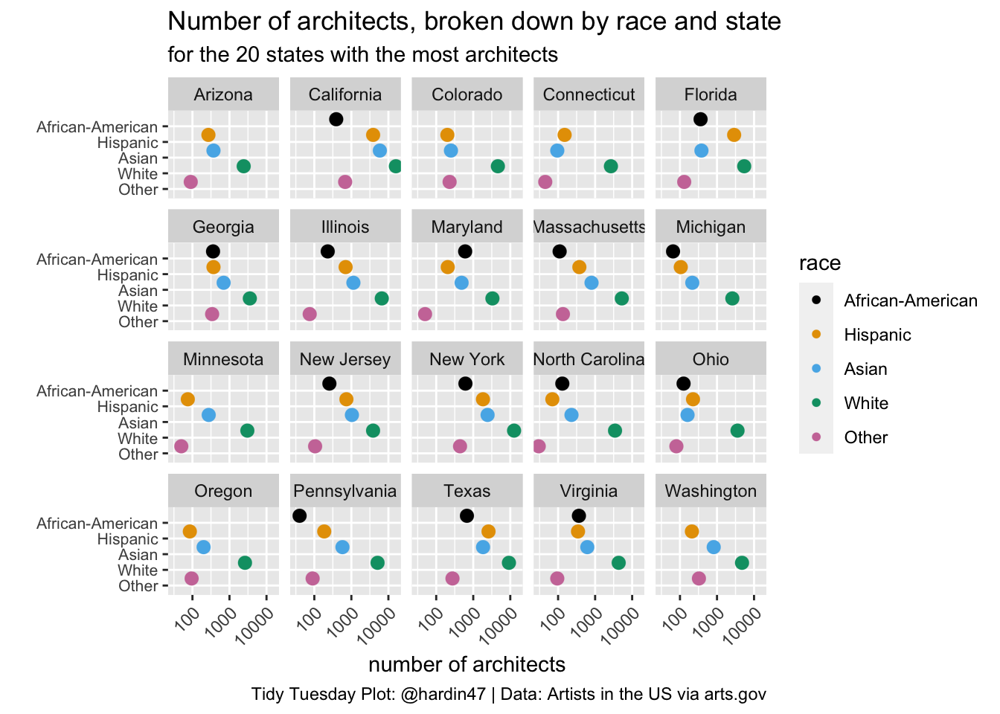

Artists in the US
The Data
The data this week comes from arts.gov by way of Data is Plural.
artists <- read_csv("artists.csv")
architects <- artists %>%
filter(type == "Architects")top_st_arch <- architects %>%
group_by(state) %>%
summarize(state_n = sum(artists_n, na.rm = TRUE)) %>%
slice_max(state_n, n = 20)
architects %>%
right_join(top_st_arch, by = "state") %>%
ungroup() %>%
ggplot(aes(y = factor(race,
levels = c("Other", "White", "Asian", "Hispanic", "African-American")),
x = artists_n)) +
ggdist::geom_dots(aes(fill = factor(race,
levels = c("African-American", "Hispanic", "Asian", "White","Other")),
color = factor(race,
levels = c("African-American", "Hispanic", "Asian", "White","Other"))),
size = .05) +
scale_color_manual(values = ggthemes::colorblind_pal()(8)[c(1,2,3,4,8)]) +
scale_fill_manual(values = ggthemes::colorblind_pal()(8)[c(1,2,3,4,8)]) +
#geofacet::facet_geo(~ state, grid = "us_state_grid1") +
scale_x_log10() +
theme(axis.text.x = element_text(angle = 45, vjust = 1, hjust = 1),
axis.text.y = element_text(size = 8)) +
labs(title = "Number of architects, broken down by race and state",
subtitle = "for the 20 states with the most architects",
x = "number of architects",
y = "",
caption = "Tidy Tuesday Plot: @hardin47 | Data: Artists in the US via arts.gov",
fill = "race",
color = "race") +
facet_wrap(~state)